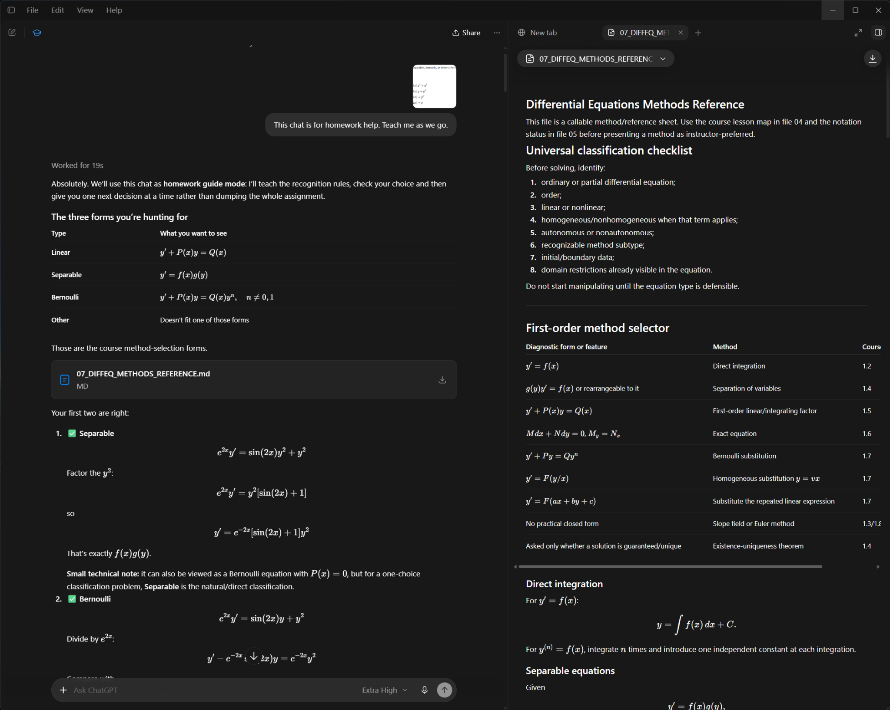

UCCS · MATH 3400 · Unit 1
Instructor review
Six interactive lesson studios for review of course alignment, mathematical explanations and the learning interface.
Prepared for Dr. Meredith Casey. Lessons 1.1–1.3 remain together; each later lesson has its own studio.
Start with a lesson. Use its roadmap and Previous/Next controls to browse. Worked answers and hints use the lesson’s own reveal controls. No sign-in or build step is required.
A second use of the tutor
Homework helper
The supplied screenshot illustrates method selection and incremental feedback alongside a differential-equations reference. It complements the complete lesson studios with help on an active problem.

Review scope and source notes
- The six lesson files are unchanged exports from the selected Instructor Review chats. Full chat transcripts are not included.
- Original instructor PDFs and earlier tutoring chats are outside this package.
- The 1.1–1.3 studio records an unresolved comparison between older source-file versions and newer filenames. The source discussion is retained.
- Mathematical corrections and tutor-added explanations are labeled in the lessons. Their presence does not imply instructor approval.
See review notes and provenance for the package details.